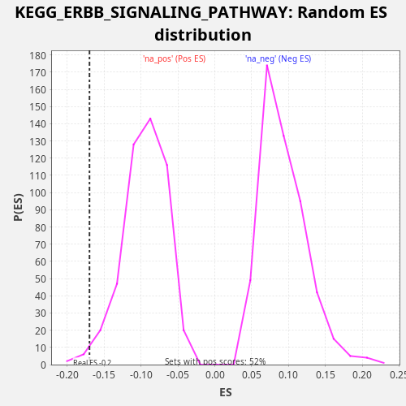

Profile of the Running ES Score & Positions of GeneSet Members on the Rank Ordered List
The same image in compressed SVG format
| Dataset | LabCL |
| Phenotype | NoPhenotypeAvailable |
| Upregulated in class | na_neg |
| GeneSet | KEGG_ERBB_SIGNALING_PATHWAY |
| Enrichment Score (ES) | -0.16992669 |
| Normalized Enrichment Score (NES) | -1.7842329 |
| Nominal p-value | 0.014522822 |
| FDR q-value | 0.106554545 |
| FWER p-Value | 0.749 |
| SYMBOL | RANK IN GENE LIST | RANK METRIC SCORE | RUNNING ES | CORE ENRICHMENT | |
|---|---|---|---|---|---|
| 1 | SHC3 | 295 | 58.710 | -0.0003 | No |
| 2 | ELK1 | 1173 | 9.270 | -0.0247 | No |
| 3 | GRB2 | 1426 | 6.358 | -0.0232 | No |
| 4 | PIK3R1 | 1974 | 3.163 | -0.0340 | No |
| 5 | CBLB | 2333 | 2.203 | -0.0369 | No |
| 6 | EIF4EBP1 | 2414 | 2.048 | -0.0283 | No |
| 7 | PIK3CD | 2459 | 1.971 | -0.0182 | No |
| 8 | PLCG1 | 2563 | 1.800 | -0.0106 | No |
| 9 | AKT3 | 2729 | 1.513 | -0.0055 | No |
| 10 | BAD | 3283 | 0.949 | -0.0165 | No |
| 11 | ARAF | 3551 | 0.789 | -0.0156 | No |
| 12 | CAMK2B | 3706 | 0.716 | -0.0101 | No |
| 13 | NRAS | 4625 | 0.370 | -0.0362 | No |
| 14 | PLCG2 | 4773 | 0.336 | -0.0304 | No |
| 15 | MAP2K2 | 5076 | 0.267 | -0.0309 | No |
| 16 | PAK3 | 5440 | 0.205 | -0.0341 | No |
| 17 | MTOR | 5845 | 0.158 | -0.0389 | No |
| 18 | PRKCG | 6317 | 0.115 | -0.0465 | No |
| 19 | GSK3B | 6434 | 0.105 | -0.0394 | No |
| 20 | ERBB4 | 6691 | 0.087 | -0.0381 | No |
| 21 | CRK | 6884 | 0.077 | -0.0341 | No |
| 22 | SRC | 7360 | 0.053 | -0.0419 | No |
| 23 | RPS6KB2 | 7416 | 0.051 | -0.0322 | No |
| 24 | NRG1 | 7591 | 0.042 | -0.0275 | No |
| 25 | HRAS | 8794 | 0.013 | -0.0654 | No |
| 26 | AKT1 | 8851 | 0.012 | -0.0558 | No |
| 27 | PIK3CA | 9562 | 0.004 | -0.0733 | No |
| 28 | KRAS | 9789 | 0.003 | -0.0707 | No |
| 29 | MAPK9 | 9989 | 0.002 | -0.0671 | No |
| 30 | SOS2 | 9992 | 0.002 | -0.0552 | No |
| 31 | MAP2K4 | 10054 | 0.001 | -0.0459 | No |
| 32 | PAK2 | 10217 | 0.001 | -0.0407 | No |
| 33 | AKT2 | 10660 | 0.000 | -0.0470 | No |
| 34 | NRG4 | 10934 | 0.000 | -0.0464 | No |
| 35 | STAT5A | 11020 | 0.000 | -0.0381 | No |
| 36 | PAK1 | 11496 | -0.000 | -0.0458 | No |
| 37 | ABL2 | 11681 | -0.001 | -0.0415 | No |
| 38 | BTC | 12223 | -0.003 | -0.0520 | No |
| 39 | CDKN1B | 12766 | -0.008 | -0.0625 | No |
| 40 | MAP2K1 | 13137 | -0.013 | -0.0659 | No |
| 41 | NCK1 | 13592 | -0.020 | -0.0728 | No |
| 42 | SHC4 | 14021 | -0.030 | -0.0786 | No |
| 43 | ERBB2 | 15216 | -0.070 | -0.1162 | No |
| 44 | SOS1 | 15316 | -0.075 | -0.1084 | No |
| 45 | PIK3R2 | 15391 | -0.078 | -0.0995 | No |
| 46 | EGF | 15516 | -0.084 | -0.0927 | No |
| 47 | MAPK1 | 16205 | -0.124 | -0.1093 | No |
| 48 | RPS6KB1 | 16954 | -0.182 | -0.1284 | No |
| 49 | MAP2K7 | 17219 | -0.211 | -0.1274 | No |
| 50 | MAPK3 | 17616 | -0.256 | -0.1319 | No |
| 51 | PRKCA | 17946 | -0.300 | -0.1336 | No |
| 52 | ABL1 | 18825 | -0.463 | -0.1580 | Yes |
| 53 | PAK4 | 18848 | -0.468 | -0.1470 | Yes |
| 54 | MYC | 18855 | -0.470 | -0.1354 | Yes |
| 55 | BRAF | 19312 | -0.595 | -0.1423 | Yes |
| 56 | NRG2 | 19594 | -0.699 | -0.1421 | Yes |
| 57 | GAB1 | 19742 | -0.751 | -0.1362 | Yes |
| 58 | PRKCB | 19900 | -0.824 | -0.1308 | Yes |
| 59 | PIK3CG | 20022 | -0.871 | -0.1239 | Yes |
| 60 | CRKL | 20067 | -0.893 | -0.1139 | Yes |
| 61 | RAF1 | 20241 | -0.971 | -0.1091 | Yes |
| 62 | STAT5B | 20439 | -1.085 | -0.1054 | Yes |
| 63 | SHC2 | 20620 | -1.211 | -0.1009 | Yes |
| 64 | JUN | 20862 | -1.388 | -0.0990 | Yes |
| 65 | CBL | 20985 | -1.511 | -0.0921 | Yes |
| 66 | NCK2 | 21366 | -1.957 | -0.0959 | Yes |
| 67 | PIK3R3 | 22003 | -3.185 | -0.1104 | Yes |
| 68 | EGFR | 22064 | -3.363 | -0.1009 | Yes |
| 69 | CAMK2A | 22078 | -3.422 | -0.0896 | Yes |
| 70 | PTK2 | 22099 | -3.503 | -0.0785 | Yes |
| 71 | MAPK8 | 22156 | -3.702 | -0.0689 | Yes |
| 72 | CDKN1A | 22188 | -3.809 | -0.0583 | Yes |
| 73 | PIK3CB | 22400 | -4.766 | -0.0551 | Yes |
| 74 | MAPK10 | 22783 | -7.464 | -0.0590 | Yes |
| 75 | SHC1 | 22799 | -7.622 | -0.0477 | Yes |
| 76 | ERBB3 | 22941 | -9.043 | -0.0417 | Yes |
| 77 | CAMK2G | 22952 | -9.187 | -0.0302 | Yes |
| 78 | PAK6 | 23249 | -13.840 | -0.0305 | Yes |
| 79 | CBLC | 23440 | -18.854 | -0.0265 | Yes |
| 80 | CAMK2D | 23616 | -26.350 | -0.0218 | Yes |
| 81 | HBEGF | 23739 | -35.016 | -0.0150 | Yes |
| 82 | EREG | 23785 | -39.654 | -0.0049 | Yes |
| 83 | TGFA | 24074 | -98.677 | -0.0050 | Yes |
| 84 | AREG | 24082 | -100.478 | 0.0067 | Yes |

{kind=link}
{kind=link}